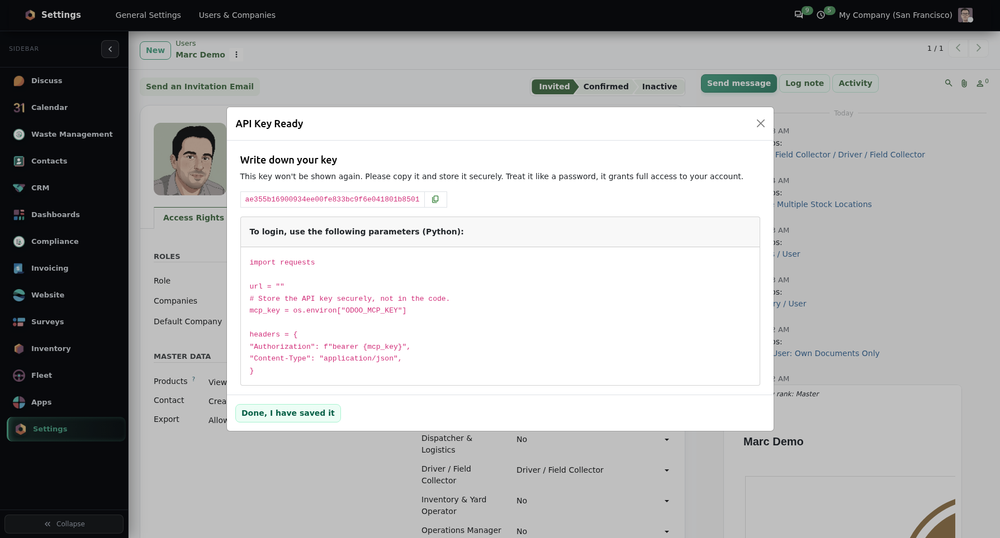
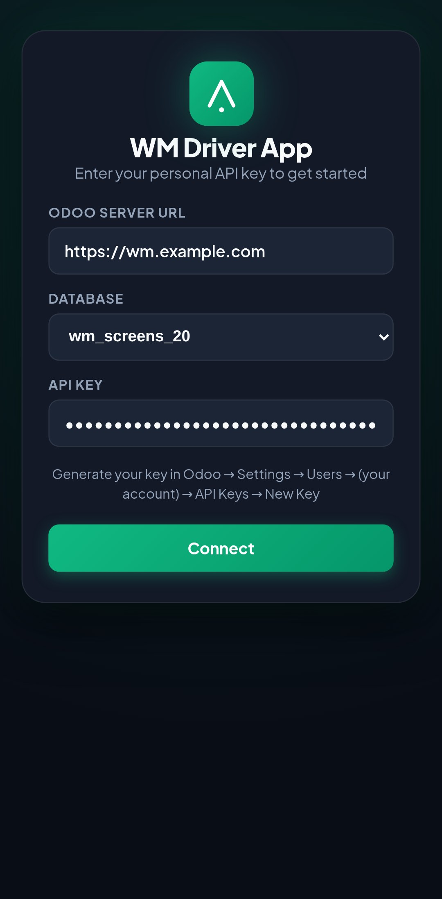
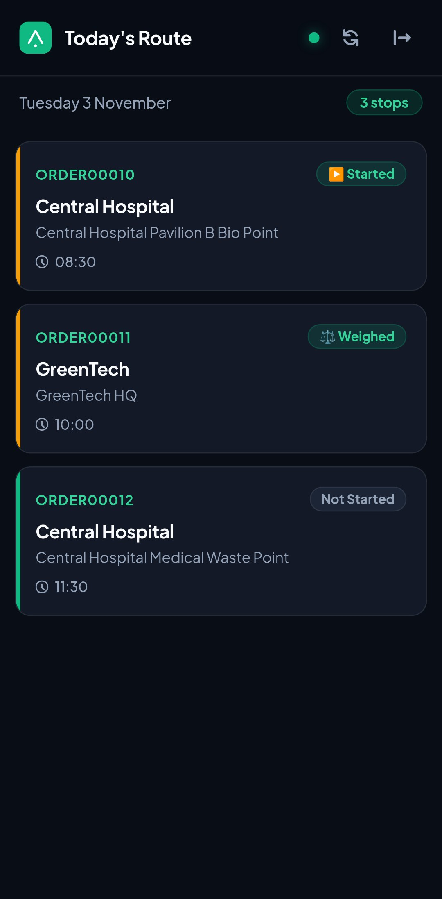
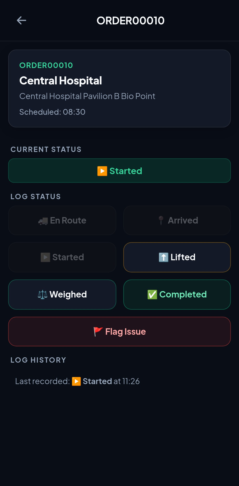
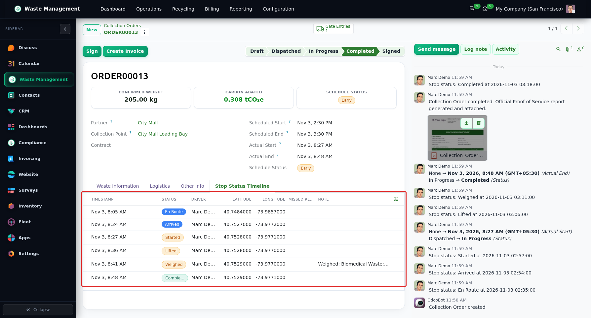
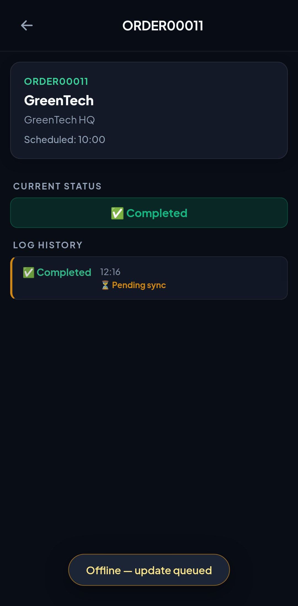
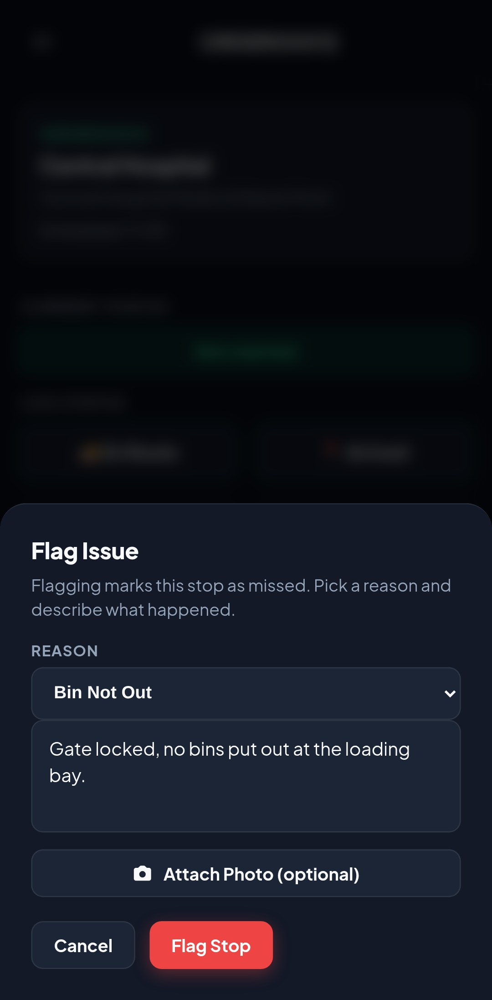
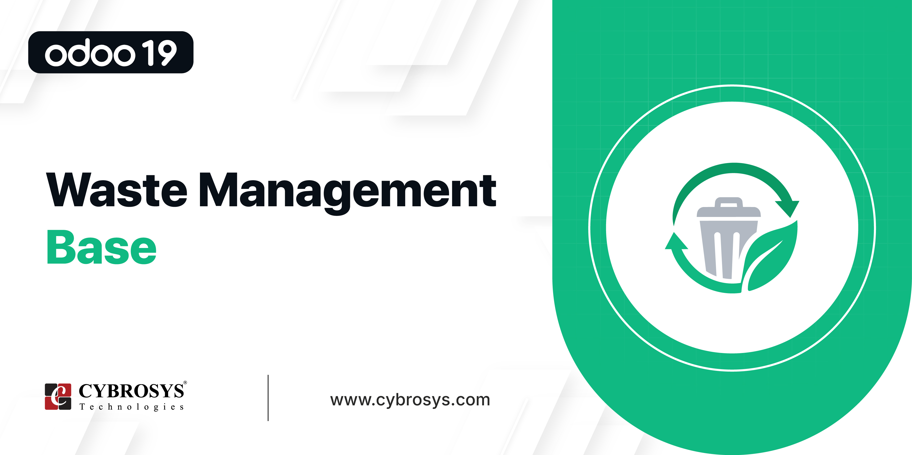
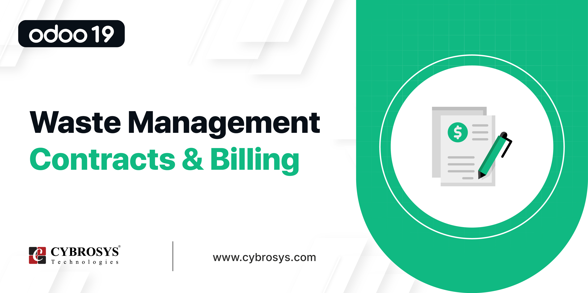
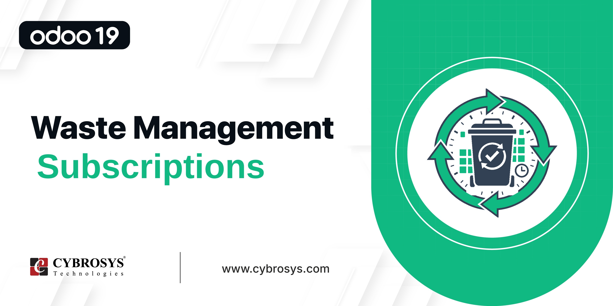

<!-- =================================================================
     Waste Management Driver App (PWA) — Odoo 20 Community description page
     ================================================================= -->
<section class="oe_container" style="background-color:#F7F8F6; color:#1A1B1D; font-family:-apple-system,BlinkMacSystemFont,'Segoe UI',Helvetica,Arial,sans-serif; font-size:16px; line-height:1.6; padding:0; margin:0;">

  <div style="width:100%; max-width:1240px; margin:0 auto; padding:28px 16px 80px;">

    <!-- ============ COMPATIBILITY BAR ============ -->
    <table cellpadding="0" cellspacing="0" border="0" style="width:100%; table-layout:fixed; border-collapse:collapse; background-color:#FFFFFF; border:1px solid #E4E6E2; border-radius:14px; margin-bottom:24px;">
      <tr>
        <td style="vertical-align:middle; padding:16px 24px; width:30%;">
          <span style="font-weight:800; font-size:12px; text-transform:uppercase; letter-spacing:0.1em; color:#8B9099; margin-right:8px;">Supports</span>
          <span style="padding:6px 14px; border-radius:20px; font-weight:700; font-size:13px; background-color:#1A1B1D; color:#FFFFFF; border:1px solid #1A1B1D; display:inline-block;">Community</span>
        </td>
        <td style="vertical-align:middle; padding:16px 24px; width:70%; text-align:right;">
          <span style="font-weight:800; font-size:12px; text-transform:uppercase; letter-spacing:0.1em; color:#8B9099; margin-right:8px;">Availability</span>
          <span style="padding:6px 14px; border-radius:20px; font-weight:700; font-size:13px; background-color:#FFFFFF; border:1px solid #E4E6E2; color:#1A1B1D; display:inline-block; margin:3px 0 3px 4px;">
            <i class="fa fa-check-circle" style="color:#2F6B4F; margin-right:6px;"></i>On Premise
          </span>
          <span style="padding:6px 14px; border-radius:20px; font-weight:700; font-size:13px; background-color:#FFFFFF; border:1px solid #E4E6E2; color:#8B9099; display:inline-block; margin:3px 0 3px 4px;">
            <i class="fa fa-times-circle" style="color:#B4B8B0; margin-right:6px;"></i>Odoo.sh
          </span>
        </td>
      </tr>
    </table>

    <!-- ============ HERO BANNER ============ -->
    <div style="background-color:#F3F8EC; border:1px solid #E4E6E2; border-radius:20px; padding:48px 40px; margin-bottom:32px;">
      <p style="font-size:13px; font-weight:800; letter-spacing:0.16em; text-transform:uppercase; color:#82901F; margin:0 0 12px;">
        <span style="display:inline-block; width:22px; height:2px; background-color:#B5C235; vertical-align:middle; margin-right:10px;"></span>
        Odoo 20 &middot; Waste Management Driver App (PWA)
      </p>
      <h1 style="font-size:42px; font-weight:800; color:#1A1B1D; margin:0 0 18px; line-height:1.15; letter-spacing:-0.02em; max-width:900px;">
        Offline-First Mobile PWA for Waste Collection Drivers
      </h1>
      <p style="font-size:17px; color:#5C6066; margin:0 0 28px; line-height:1.6; max-width:820px;">
        Empower fleet drivers with an installable mobile app, as a browser Progressive Web App (PWA) or an Android app, that offers quick stop status progression, offline IndexedDB queuing, GPS geolocation stamps, and automatic synchronization of queued updates to Odoo 20 when the connection returns.
      </p>
      <div>
        <a href="mailto:odoo@cybrosys.com" style="display:inline-block; font-size:15px; font-weight:700; text-decoration:none; padding:13px 24px; border-radius:14px; background-color:#B5C235; color:#1A1B1D; border:1px solid #A2AF2C; margin:4px 8px 4px 0;">
          <i class="fa fa-envelope" style="margin-right:9px;"></i>Email Us
        </a>
        <a href="https://teams.microsoft.com/l/chat/0/0?users=odoo@cybrosys.com" style="display:inline-block; font-size:15px; font-weight:700; text-decoration:none; padding:13px 24px; border-radius:14px; background-color:#FFFFFF; color:#1A1B1D; border:1px solid #E4E6E2; margin:4px 8px 4px 0;">
          <i class="fa fa-users" style="color:#5059C9; margin-right:9px;"></i>Teams
        </a>
        <a href="https://wa.me/919074270811" target="_blank" style="display:inline-block; font-size:15px; font-weight:700; text-decoration:none; padding:13px 24px; border-radius:14px; background-color:#FFFFFF; color:#1A1B1D; border:1px solid #E4E6E2; margin:4px 8px 4px 0;">
          <i class="fa fa-whatsapp" style="color:#25D366; margin-right:9px;"></i>+91 9074270811
        </a>
      </div>
    </div>

    <!-- ============ WORKFLOW PIPELINE ============ -->
    <div style="background-color:#FFFFFF; border:1px solid #E4E6E2; border-radius:20px; padding:44px 36px; margin-bottom:32px;">
      <div style="text-align:center; margin-bottom:36px;">
        <p style="font-size:12px; font-weight:800; letter-spacing:0.18em; text-transform:uppercase; color:#82901F; margin:0 0 12px;">Mobile Field Execution Pipeline</p>
        <h2 style="font-size:32px; font-weight:800; color:#1A1B1D; margin:0 0 12px; line-height:1.2;">From Morning Route Dispatch to Verified Collection</h2>
        <p style="font-size:17px; color:#5C6066; max-width:700px; margin:0 auto; line-height:1.6;">A touch-optimized, driver-friendly operational workflow ensuring zero data loss and automated field tracking.</p>
      </div>

      <table cellpadding="0" cellspacing="0" border="0" style="width:100%; table-layout:fixed; border-collapse:separate; border-spacing:12px;">
        <tr>
          <td style="width:33.33%; vertical-align:top; border-top:2px solid #E4E6E2; padding-top:14px; word-wrap:break-word;">
            <div style="font-size:13px; font-weight:800; color:#8B9099; margin-bottom:6px;">01</div>
            <h3 style="font-size:16px; font-weight:700; color:#1A1B1D; margin:0 0 6px;">Secure Pairing</h3>
            <p style="font-size:14px; color:#5C6066; margin:0; line-height:1.5;">Drivers sign in securely with a dedicated API key generated in Odoo.</p>
          </td>
          <td style="width:33.33%; vertical-align:top; border-top:2px solid #E4E6E2; padding-top:14px; word-wrap:break-word;">
            <div style="font-size:13px; font-weight:800; color:#8B9099; margin-bottom:6px;">02</div>
            <h3 style="font-size:16px; font-weight:700; color:#1A1B1D; margin:0 0 6px;">Daily Route Sync</h3>
            <p style="font-size:14px; color:#5C6066; margin:0; line-height:1.5;">Load today's stops (including flagged ones) with customer, address, scheduled time and allowed waste categories; the route is saved on the phone for offline restarts.</p>
          </td>
          <td style="width:33.33%; vertical-align:top; border-top:2px solid #E4E6E2; padding-top:14px; word-wrap:break-word;">
            <div style="font-size:13px; font-weight:800; color:#8B9099; margin-bottom:6px;">03</div>
            <h3 style="font-size:16px; font-weight:700; color:#1A1B1D; margin:0 0 6px;">One-Tap Progress</h3>
            <p style="font-size:14px; color:#5C6066; margin:0; line-height:1.5;">Tap En Route &rarr; Arrived &rarr; Started &rarr; Lifted with big touch targets, then Submit (photo optional) or Cancel if tapped by mistake.</p>
          </td>
        </tr>
        <tr>
          <td style="width:33.33%; vertical-align:top; border-top:2px solid #E4E6E2; padding-top:14px; word-wrap:break-word;">
            <div style="font-size:13px; font-weight:800; color:#8B9099; margin-bottom:6px;">04</div>
            <h3 style="font-size:16px; font-weight:700; color:#1A1B1D; margin:0 0 6px;">Weight &amp; Proof Log</h3>
            <p style="font-size:14px; color:#5C6066; margin:0; line-height:1.5;">Enter the measured weight per waste category, and optionally attach a photo to any status update.</p>
          </td>
          <td style="width:33.33%; vertical-align:top; border-top:2px solid #E4E6E2; padding-top:14px; word-wrap:break-word;">
            <div style="font-size:13px; font-weight:800; color:#8B9099; margin-bottom:6px;">05</div>
            <h3 style="font-size:16px; font-weight:700; color:#1A1B1D; margin:0 0 6px;">Incident Flagging</h3>
            <p style="font-size:14px; color:#5C6066; margin:0; line-height:1.5;">Flag a stop with a reason code and a required note (photo optional) for blocked access, contaminated bins, or safety issues; the stop is marked missed.</p>
          </td>
          <td style="width:33.33%; vertical-align:top; border-top:2px solid #E4E6E2; padding-top:14px; word-wrap:break-word;">
            <div style="font-size:13px; font-weight:800; color:#8B9099; margin-bottom:6px;">06</div>
            <h3 style="font-size:16px; font-weight:700; color:#1A1B1D; margin:0 0 6px;">Auto-Reconciliation</h3>
            <p style="font-size:14px; color:#5C6066; margin:0; line-height:1.5;">Queued actions are sent in order, oldest first, when the device comes back online or the app is reopened; queued updates the server rejects stay flagged on the stop for the driver to review or discard.</p>
          </td>
        </tr>
      </table>
    </div>

    <!-- ============ CORE CAPABILITIES ============ -->
    <div style="background-color:#FFFFFF; border:1px solid #E4E6E2; border-radius:20px; padding:44px 36px; margin-bottom:32px;">
      <div style="text-align:center; margin-bottom:36px;">
        <p style="font-size:12px; font-weight:800; letter-spacing:0.18em; text-transform:uppercase; color:#82901F; margin:0 0 12px;">Core Capabilities</p>
        <h2 style="font-size:32px; font-weight:800; color:#1A1B1D; margin:0 0 12px; line-height:1.2;">Engineered for Tough Field Operations</h2>
        <p style="font-size:17px; color:#5C6066; max-width:700px; margin:0 auto; line-height:1.6;">Designed for high-speed usability in vehicle cabs, low-connectivity zones, and active collection stops.</p>
      </div>

      <table cellpadding="0" cellspacing="0" border="0" style="width:100%; table-layout:fixed; border-collapse:separate; border-spacing:12px;">
        <tr>
          <td style="width:33.33%; vertical-align:top; background-color:#F7F8F6; border:1px solid #E4E6E2; border-radius:14px; padding:22px; word-wrap:break-word;">
            <span style="display:inline-block; width:40px; height:40px; line-height:40px; text-align:center; border-radius:10px; background-color:#FFFFFF; color:#82901F; border:1px solid #E4E6E2; margin-bottom:12px;"><i class="fa fa-mobile" style="font-size:22px;"></i></span>
            <h3 style="font-size:16px; font-weight:700; color:#1A1B1D; margin:0 0 6px;">Installable PWA</h3>
            <p style="font-size:14px; color:#5C6066; margin:0; line-height:1.5;">The app feels native on Android and iOS: it has a web manifest, an app icon and a standalone full-screen mode, and it needs no app store installation (HTTPS is required). An Android app (APK) is also available; it opens offline and works with plain-HTTP LAN servers.</p>
          </td>
          <td style="width:33.33%; vertical-align:top; background-color:#F7F8F6; border:1px solid #E4E6E2; border-radius:14px; padding:22px; word-wrap:break-word;">
            <span style="display:inline-block; width:40px; height:40px; line-height:40px; text-align:center; border-radius:10px; background-color:#FFFFFF; color:#82901F; border:1px solid #E4E6E2; margin-bottom:12px;"><i class="fa fa-bolt" style="font-size:18px;"></i></span>
            <h3 style="font-size:16px; font-weight:700; color:#1A1B1D; margin:0 0 6px;">One-Tap Status Flow</h3>
            <p style="font-size:14px; color:#5C6066; margin:0; line-height:1.5;">High-contrast buttons for the En Route, Arrived, Started, Lifted, Weighed and Completed states are sized for work gloves.</p>
          </td>
          <td style="width:33.33%; vertical-align:top; background-color:#F7F8F6; border:1px solid #E4E6E2; border-radius:14px; padding:22px; word-wrap:break-word;">
            <span style="display:inline-block; width:40px; height:40px; line-height:40px; text-align:center; border-radius:10px; background-color:#FFFFFF; color:#82901F; border:1px solid #E4E6E2; margin-bottom:12px;"><i class="fa fa-wifi" style="font-size:18px;"></i></span>
            <h3 style="font-size:16px; font-weight:700; color:#1A1B1D; margin:0 0 6px;">Offline IndexedDB Queue</h3>
            <p style="font-size:14px; color:#5C6066; margin:0; line-height:1.5;">Never lose a collection log in dead zones. Every status update is saved in the local browser database first and sent automatically when signal returns.</p>
          </td>
        </tr>
        <tr>
          <td style="width:33.33%; vertical-align:top; background-color:#F7F8F6; border:1px solid #E4E6E2; border-radius:14px; padding:22px; word-wrap:break-word;">
            <span style="display:inline-block; width:40px; height:40px; line-height:40px; text-align:center; border-radius:10px; background-color:#FFFFFF; color:#82901F; border:1px solid #E4E6E2; margin-bottom:12px;"><i class="fa fa-map-marker" style="font-size:19px;"></i></span>
            <h3 style="font-size:16px; font-weight:700; color:#1A1B1D; margin:0 0 6px;">GPS Geolocation Stamps</h3>
            <p style="font-size:14px; color:#5C6066; margin:0; line-height:1.5;">The app follows the phone's GPS while the route is open and stamps every status tap with position and time; without a fix, the server estimates the location and records its source.</p>
          </td>
          <td style="width:33.33%; vertical-align:top; background-color:#F7F8F6; border:1px solid #E4E6E2; border-radius:14px; padding:22px; word-wrap:break-word;">
            <span style="display:inline-block; width:40px; height:40px; line-height:40px; text-align:center; border-radius:10px; background-color:#FFFFFF; color:#82901F; border:1px solid #E4E6E2; margin-bottom:12px;"><i class="fa fa-shield" style="font-size:18px;"></i></span>
            <h3 style="font-size:16px; font-weight:700; color:#1A1B1D; margin:0 0 6px;">No Duplicate Updates</h3>
            <p style="font-size:14px; color:#5C6066; margin:0; line-height:1.5;">A unique ID created on the phone for each update prevents double-recording or duplicate weights when a patchy network makes the app retry.</p>
          </td>
          <td style="width:33.33%; vertical-align:top; background-color:#F7F8F6; border:1px solid #E4E6E2; border-radius:14px; padding:22px; word-wrap:break-word;">
            <span style="display:inline-block; width:40px; height:40px; line-height:40px; text-align:center; border-radius:10px; background-color:#FFFFFF; color:#82901F; border:1px solid #E4E6E2; margin-bottom:12px;"><i class="fa fa-exclamation-triangle" style="font-size:18px;"></i></span>
            <h3 style="font-size:16px; font-weight:700; color:#1A1B1D; margin:0 0 6px;">Incident &amp; Exception Flags</h3>
            <p style="font-size:14px; color:#5C6066; margin:0; line-height:1.5;">Record the wrong type of waste, locked customer gates, or missing bins with a reason code and a mandatory note; the stop is marked missed and a missed-collection record is created for dispatch.</p>
          </td>
        </tr>
      </table>
    </div>

    <!-- ============ TABS ============ -->
    <style>
      section.oe_container .nav-tabs { border:none !important; }
      section.oe_container .nav-tabs .nav-link.active { background:#82901F !important; color:#fff !important; border-radius:24px !important; box-shadow:0 4px 12px rgba(130,144,31,0.28) !important; }
      section.oe_container input[type="radio"].wm-tab-input { display:none !important; }
      section.oe_container .tab-pane { display:none; }
      section.oe_container .tab-pane.active { display:block !important; }
      #wm-ss-radio:checked~.tab-content #wm-screenshots,#wm-ft-radio:checked~.tab-content #wm-features,#wm-fq-radio:checked~.tab-content #wm-faqs,#wm-rl-radio:checked~.tab-content #wm-releases { display:block !important; }
      #wm-ft-radio:checked~.tab-content #wm-screenshots.active,#wm-fq-radio:checked~.tab-content #wm-screenshots.active,#wm-rl-radio:checked~.tab-content #wm-screenshots.active { display:none !important; }
      #wm-ss-radio:checked~div ul.nav-tabs #wm-screenshots-tab,#wm-ft-radio:checked~div ul.nav-tabs #wm-features-tab,#wm-fq-radio:checked~div ul.nav-tabs #wm-faqs-tab,#wm-rl-radio:checked~div ul.nav-tabs #wm-releases-tab { background:#82901F !important; color:#fff !important; border-radius:24px !important; box-shadow:0 4px 12px rgba(130,144,31,0.28) !important; }
      #wm-ft-radio:checked~div ul.nav-tabs #wm-screenshots-tab.active,#wm-fq-radio:checked~div ul.nav-tabs #wm-screenshots-tab.active,#wm-rl-radio:checked~div ul.nav-tabs #wm-screenshots-tab.active { background:transparent !important; color:#5C6066 !important; box-shadow:none !important; border-radius:24px !important; }
    </style>

    <div style="background-color:#FFFFFF; border:1px solid #E4E6E2; border-radius:20px; padding:40px 36px; margin-bottom:32px;">
      <input type="radio" id="wm-ss-radio" name="wm-tabs" class="wm-tab-input" checked style="display:none" />
      <input type="radio" id="wm-ft-radio" name="wm-tabs" class="wm-tab-input" style="display:none" />
      <input type="radio" id="wm-fq-radio" name="wm-tabs" class="wm-tab-input" style="display:none" />
      <input type="radio" id="wm-rl-radio" name="wm-tabs" class="wm-tab-input" style="display:none" />

      <div style="text-align:center; margin-bottom:2rem;"><ul class="nav nav-tabs" id="wmDriverTab" role="tablist" style="border:none; background:#F3F4EE; border-radius:30px; padding:6px; display:inline-flex; list-style:none; margin:0 auto; box-shadow:inset 0 2px 4px rgba(26,27,29,0.05);">
        <li class="nav-item" role="presentation" style="margin:0;"><label class="nav-link active" id="wm-screenshots-tab" data-bs-toggle="tab" data-toggle="tab" href="#wm-screenshots" for="wm-ss-radio" role="tab" style="text-decoration:none; display:inline-block; border-radius:24px; margin:0 3px; cursor:pointer; padding:11px 26px; font-weight:700; font-size:14px; color:#5C6066;">Screenshots</label></li>
        <li class="nav-item" role="presentation" style="margin:0;"><label class="nav-link" id="wm-features-tab" data-bs-toggle="tab" data-toggle="tab" href="#wm-features" for="wm-ft-radio" role="tab" style="text-decoration:none; display:inline-block; border-radius:24px; margin:0 3px; cursor:pointer; padding:11px 26px; font-weight:700; font-size:14px; color:#5C6066;">Features</label></li>
        <li class="nav-item" role="presentation" style="margin:0;"><label class="nav-link" id="wm-faqs-tab" data-bs-toggle="tab" data-toggle="tab" href="#wm-faqs" for="wm-fq-radio" role="tab" style="text-decoration:none; display:inline-block; border-radius:24px; margin:0 3px; cursor:pointer; padding:11px 26px; font-weight:700; font-size:14px; color:#5C6066;">FAQs</label></li>
        <li class="nav-item" role="presentation" style="margin:0;"><label class="nav-link" id="wm-releases-tab" data-bs-toggle="tab" data-toggle="tab" href="#wm-releases" for="wm-rl-radio" role="tab" style="text-decoration:none; display:inline-block; border-radius:24px; margin:0 3px; cursor:pointer; padding:11px 26px; font-weight:700; font-size:14px; color:#5C6066;">Releases</label></li>
      </ul></div>

      <div class="tab-content" id="wmDriverTabContent">

        <!-- SCREENSHOTS -->
        <div class="tab-pane fade show active" id="wm-screenshots" role="tabpanel" aria-labelledby="wm-screenshots-tab"><div style="padding-top:1rem;">

          <div style="border:1px solid #E4E6E2; border-radius:20px; overflow:hidden; background-color:#FFFFFF; margin-bottom:40px;">
            <table cellpadding="0" cellspacing="0" border="0" style="width:100%; table-layout:fixed; border-collapse:collapse; background-color:#F7F8F6; border-bottom:1px solid #E4E6E2;"><tr>
              <td style="padding:14px 24px; vertical-align:middle; width:50%;"><span style="display:inline-block; width:10px; height:10px; border-radius:50%; background-color:#D0D3CD; margin-right:5px;"></span><span style="display:inline-block; width:10px; height:10px; border-radius:50%; background-color:#D0D3CD; margin-right:5px;"></span><span style="display:inline-block; width:10px; height:10px; border-radius:50%; background-color:#D0D3CD;"></span></td>
              <td style="padding:14px 24px; vertical-align:middle; width:50%; text-align:right; font-size:14px; font-weight:600; color:#5C6066;"><i class="fa fa-key" style="color:#82901F; margin-right:8px;"></i>API Key Setup</td>
            </tr></table>
            
            <div style="padding:24px 30px;"><h4 style="font-size:20px; font-weight:700; color:#1A1B1D; margin:0 0 8px;"><span style="font-size:14px; font-weight:800; color:#82901F; margin-right:10px;">01</span>Driver API Key Generation &amp; App Authentication</h4><p style="color:#5C6066; margin:0; line-height:1.6; font-size:15px;">Generate a secure, native Odoo API key from user settings to connect and authenticate the mobile Driver App.</p></div>
          </div>

          <div style="border:1px solid #E4E6E2; border-radius:20px; overflow:hidden; background-color:#FFFFFF; margin-bottom:40px;">
            <table cellpadding="0" cellspacing="0" border="0" style="width:100%; table-layout:fixed; border-collapse:collapse; background-color:#F7F8F6; border-bottom:1px solid #E4E6E2;"><tr>
              <td style="padding:14px 24px; vertical-align:middle; width:50%;"><span style="display:inline-block; width:10px; height:10px; border-radius:50%; background-color:#D0D3CD; margin-right:5px;"></span><span style="display:inline-block; width:10px; height:10px; border-radius:50%; background-color:#D0D3CD; margin-right:5px;"></span><span style="display:inline-block; width:10px; height:10px; border-radius:50%; background-color:#D0D3CD;"></span></td>
              <td style="padding:14px 24px; vertical-align:middle; width:50%; text-align:right; font-size:14px; font-weight:600; color:#5C6066;"><i class="fa fa-qrcode" style="color:#82901F; margin-right:8px;"></i>Authentication</td>
            </tr></table>
            
            <div style="padding:24px 30px;"><h4 style="font-size:20px; font-weight:700; color:#1A1B1D; margin:0 0 8px;"><span style="font-size:14px; font-weight:800; color:#82901F; margin-right:10px;">02</span>Mobile PWA Setup &amp; API Key Authentication</h4><p style="color:#5C6066; margin:0; line-height:1.6; font-size:15px;">Drivers authenticate securely and quickly by entering their dedicated API key generated in Odoo—no user passwords required.</p></div>
          </div>

          <div style="border:1px solid #E4E6E2; border-radius:20px; overflow:hidden; background-color:#FFFFFF; margin-bottom:40px;">
            <table cellpadding="0" cellspacing="0" border="0" style="width:100%; table-layout:fixed; border-collapse:collapse; background-color:#F7F8F6; border-bottom:1px solid #E4E6E2;"><tr>
              <td style="padding:14px 24px; vertical-align:middle; width:50%;"><span style="display:inline-block; width:10px; height:10px; border-radius:50%; background-color:#D0D3CD; margin-right:5px;"></span><span style="display:inline-block; width:10px; height:10px; border-radius:50%; background-color:#D0D3CD; margin-right:5px;"></span><span style="display:inline-block; width:10px; height:10px; border-radius:50%; background-color:#D0D3CD;"></span></td>
              <td style="padding:14px 24px; vertical-align:middle; width:50%; text-align:right; font-size:14px; font-weight:600; color:#5C6066;"><i class="fa fa-list-ol" style="color:#82901F; margin-right:8px;"></i>Route Dashboard</td>
            </tr></table>
            
            <div style="padding:24px 30px;"><h4 style="font-size:20px; font-weight:700; color:#1A1B1D; margin:0 0 8px;"><span style="font-size:14px; font-weight:800; color:#82901F; margin-right:10px;">03</span>Driver Daily Route Dashboard &amp; Interactive Stop Checklist</h4><p style="color:#5C6066; margin:0; line-height:1.6; font-size:15px;">A clear daily checklist of collection stops showing customer, address, scheduled time, current status, and any updates still pending sync or rejected by the server.</p></div>
          </div>

          <div style="border:1px solid #E4E6E2; border-radius:20px; overflow:hidden; background-color:#FFFFFF; margin-bottom:40px;">
            <table cellpadding="0" cellspacing="0" border="0" style="width:100%; table-layout:fixed; border-collapse:collapse; background-color:#F7F8F6; border-bottom:1px solid #E4E6E2;"><tr>
              <td style="padding:14px 24px; vertical-align:middle; width:50%;"><span style="display:inline-block; width:10px; height:10px; border-radius:50%; background-color:#D0D3CD; margin-right:5px;"></span><span style="display:inline-block; width:10px; height:10px; border-radius:50%; background-color:#D0D3CD; margin-right:5px;"></span><span style="display:inline-block; width:10px; height:10px; border-radius:50%; background-color:#D0D3CD;"></span></td>
              <td style="padding:14px 24px; vertical-align:middle; width:50%; text-align:right; font-size:14px; font-weight:600; color:#5C6066;"><i class="fa fa-play-circle" style="color:#82901F; margin-right:8px;"></i>One-Tap Progress</td>
            </tr></table>
            
            <div style="padding:24px 30px;"><h4 style="font-size:20px; font-weight:700; color:#1A1B1D; margin:0 0 8px;"><span style="font-size:14px; font-weight:800; color:#82901F; margin-right:10px;">04</span>One-Tap Stop Progression &amp; Weight Logging</h4><p style="color:#5C6066; margin:0; line-height:1.6; font-size:15px;">Simple one-tap buttons let drivers quickly record arrivals, lifts, weights per waste category, and completed stops.</p></div>
          </div>

          <div style="border:1px solid #E4E6E2; border-radius:20px; overflow:hidden; background-color:#FFFFFF; margin-bottom:40px;">
            <table cellpadding="0" cellspacing="0" border="0" style="width:100%; table-layout:fixed; border-collapse:collapse; background-color:#F7F8F6; border-bottom:1px solid #E4E6E2;"><tr>
              <td style="padding:14px 24px; vertical-align:middle; width:50%;"><span style="display:inline-block; width:10px; height:10px; border-radius:50%; background-color:#D0D3CD; margin-right:5px;"></span><span style="display:inline-block; width:10px; height:10px; border-radius:50%; background-color:#D0D3CD; margin-right:5px;"></span><span style="display:inline-block; width:10px; height:10px; border-radius:50%; background-color:#D0D3CD;"></span></td>
              <td style="padding:14px 24px; vertical-align:middle; width:50%; text-align:right; font-size:14px; font-weight:600; color:#5C6066;"><i class="fa fa-map-marker" style="color:#82901F; margin-right:8px;"></i>GPS Verification</td>
            </tr></table>
            
            <div style="padding:24px 30px;"><h4 style="font-size:20px; font-weight:700; color:#1A1B1D; margin:0 0 8px;"><span style="font-size:14px; font-weight:800; color:#82901F; margin-right:10px;">05</span>Stop Status Timeline &amp; Real-Time GPS Geolocation</h4><p style="color:#5C6066; margin:0; line-height:1.6; font-size:15px;">Each step records the device timestamp and the driver's GPS location; when the phone has no fix, an estimated location is stored and labelled with its Location Source.</p></div>
          </div>

          <div style="border:1px solid #E4E6E2; border-radius:20px; overflow:hidden; background-color:#FFFFFF; margin-bottom:40px;">
            <table cellpadding="0" cellspacing="0" border="0" style="width:100%; table-layout:fixed; border-collapse:collapse; background-color:#F7F8F6; border-bottom:1px solid #E4E6E2;"><tr>
              <td style="padding:14px 24px; vertical-align:middle; width:50%;"><span style="display:inline-block; width:10px; height:10px; border-radius:50%; background-color:#D0D3CD; margin-right:5px;"></span><span style="display:inline-block; width:10px; height:10px; border-radius:50%; background-color:#D0D3CD; margin-right:5px;"></span><span style="display:inline-block; width:10px; height:10px; border-radius:50%; background-color:#D0D3CD;"></span></td>
              <td style="padding:14px 24px; vertical-align:middle; width:50%; text-align:right; font-size:14px; font-weight:600; color:#5C6066;"><i class="fa fa-database" style="color:#82901F; margin-right:8px;"></i>Offline Queue</td>
            </tr></table>
            
            <div style="padding:24px 30px;"><h4 style="font-size:20px; font-weight:700; color:#1A1B1D; margin:0 0 8px;"><span style="font-size:14px; font-weight:800; color:#82901F; margin-right:10px;">06</span>Offline-First IndexedDB Queue &amp; Background Sync</h4><p style="color:#5C6066; margin:0; line-height:1.6; font-size:15px;">Status updates, weights and photos are saved on the device in areas with no cellular signal and synced when back online (the day's route must have been loaded online once; it stays saved on the phone).</p></div>
          </div>

          <div style="border:1px solid #E4E6E2; border-radius:20px; overflow:hidden; background-color:#FFFFFF;">
            <table cellpadding="0" cellspacing="0" border="0" style="width:100%; table-layout:fixed; border-collapse:collapse; background-color:#F7F8F6; border-bottom:1px solid #E4E6E2;"><tr>
              <td style="padding:14px 24px; vertical-align:middle; width:50%;"><span style="display:inline-block; width:10px; height:10px; border-radius:50%; background-color:#D0D3CD; margin-right:5px;"></span><span style="display:inline-block; width:10px; height:10px; border-radius:50%; background-color:#D0D3CD; margin-right:5px;"></span><span style="display:inline-block; width:10px; height:10px; border-radius:50%; background-color:#D0D3CD;"></span></td>
              <td style="padding:14px 24px; vertical-align:middle; width:50%; text-align:right; font-size:14px; font-weight:600; color:#5C6066;"><i class="fa fa-exclamation-triangle" style="color:#82901F; margin-right:8px;"></i>Exception Handling</td>
            </tr></table>
            
            <div style="padding:24px 30px;"><h4 style="font-size:20px; font-weight:700; color:#1A1B1D; margin:0 0 8px;"><span style="font-size:14px; font-weight:800; color:#82901F; margin-right:10px;">07</span>Exception Incident Flagging &amp; Issue Logs</h4><p style="color:#5C6066; margin:0; line-height:1.6; font-size:15px;">Drivers can quickly report issues like blocked gates, contaminated waste, or missing bins with a reason code, a note and an optional photo; the stop is marked missed for the dispatch team.</p></div>
          </div>

        </div></div>

        <!-- FEATURES -->
        <div class="tab-pane fade" id="wm-features" role="tabpanel" aria-labelledby="wm-features-tab"><div style="padding-top:1rem;"><table cellpadding="0" cellspacing="0" border="0" style="width:100%; table-layout:fixed; border-collapse:separate; border-spacing:10px;"><tr>
          <td style="width:50%; vertical-align:top; background-color:#F7F8F6; border:1px solid #E4E6E2; border-radius:14px; padding:22px; word-wrap:break-word;"><div style="font-weight:800; font-size:13px; letter-spacing:0.1em; color:#82901F; margin-bottom:10px;">01</div><h4 style="font-size:17px; font-weight:700; color:#1A1B1D; margin:0 0 8px;">Standalone PWA Installation</h4><p style="font-size:15px; color:#5C6066; margin:0; line-height:1.55;">Add the app directly to the home screen on iOS, Android or rugged field tablets through a standard web app manifest and a service worker (served over HTTPS), or install the Android app (APK), which opens without a connection.</p></td>
          <td style="width:50%; vertical-align:top; background-color:#F7F8F6; border:1px solid #E4E6E2; border-radius:14px; padding:22px; word-wrap:break-word;"><div style="font-weight:800; font-size:13px; letter-spacing:0.1em; color:#82901F; margin-bottom:10px;">02</div><h4 style="font-size:17px; font-weight:700; color:#1A1B1D; margin:0 0 8px;">REST API &amp; API-Key Auth</h4><p style="font-size:15px; color:#5C6066; margin:0; line-height:1.55;">The app is backed by Odoo's native res.users.apikeys infrastructure. Drivers never enter or store an Odoo password, and each driver only sees and updates their own assigned stops.</p></td>
        </tr><tr>
          <td style="width:50%; vertical-align:top; background-color:#F7F8F6; border:1px solid #E4E6E2; border-radius:14px; padding:22px; word-wrap:break-word;"><div style="font-weight:800; font-size:13px; letter-spacing:0.1em; color:#82901F; margin-bottom:10px;">03</div><h4 style="font-size:17px; font-weight:700; color:#1A1B1D; margin:0 0 8px;">Offline Storage with IndexedDB</h4><p style="font-size:15px; color:#5C6066; margin:0; line-height:1.55;">The browser database (IndexedDB) keeps the queue of unsynced status updates, weights and photos safe through tunnels, basements and rural dead zones.</p></td>
          <td style="width:50%; vertical-align:top; background-color:#F7F8F6; border:1px solid #E4E6E2; border-radius:14px; padding:22px; word-wrap:break-word;"><div style="font-weight:800; font-size:13px; letter-spacing:0.1em; color:#82901F; margin-bottom:10px;">04</div><h4 style="font-size:17px; font-weight:700; color:#1A1B1D; margin:0 0 8px;">Safe Retries Without Duplicates</h4><p style="font-size:15px; color:#5C6066; margin:0; line-height:1.55;">A unique ID created on the phone for each update stops the server from recording it twice when the network reconnects.</p></td>
        </tr><tr>
          <td style="width:50%; vertical-align:top; background-color:#F7F8F6; border:1px solid #E4E6E2; border-radius:14px; padding:22px; word-wrap:break-word;"><div style="font-weight:800; font-size:13px; letter-spacing:0.1em; color:#82901F; margin-bottom:10px;">05</div><h4 style="font-size:17px; font-weight:700; color:#1A1B1D; margin:0 0 8px;">Automatic GPS Coordinate Capture</h4><p style="font-size:15px; color:#5C6066; margin:0; line-height:1.55;">The app captures the device's GPS position and a timestamp on every status tap. When the phone has no position, the server estimates it from the vehicle tracker or collection point and records the location source; a banner warns the driver when location is off.</p></td>
          <td style="width:50%; vertical-align:top; background-color:#F7F8F6; border:1px solid #E4E6E2; border-radius:14px; padding:22px; word-wrap:break-word;"><div style="font-weight:800; font-size:13px; letter-spacing:0.1em; color:#82901F; margin-bottom:10px;">06</div><h4 style="font-size:17px; font-weight:700; color:#1A1B1D; margin:0 0 8px;">One-Tap Collection Workflow</h4><p style="font-size:15px; color:#5C6066; margin:0; line-height:1.55;">Large, simple buttons guide drivers through En Route &rarr; Arrived &rarr; Started &rarr; Lifted &rarr; Weighed &rarr; Completed.</p></td>
        </tr><tr>
          <td style="width:50%; vertical-align:top; background-color:#F7F8F6; border:1px solid #E4E6E2; border-radius:14px; padding:22px; word-wrap:break-word;"><div style="font-weight:800; font-size:13px; letter-spacing:0.1em; color:#82901F; margin-bottom:10px;">07</div><h4 style="font-size:17px; font-weight:700; color:#1A1B1D; margin:0 0 8px;">Incident &amp; Issue Logs</h4><p style="font-size:15px; color:#5C6066; margin:0; line-height:1.55;">Log blocked gates, contaminated materials, broken bins, or customer refusals with a reason code, a mandatory note and an optional photo; the stop is marked missed.</p></td>
          <td style="width:50%; vertical-align:top; background-color:#F7F8F6; border:1px solid #E4E6E2; border-radius:14px; padding:22px; word-wrap:break-word;"><div style="font-weight:800; font-size:13px; letter-spacing:0.1em; color:#82901F; margin-bottom:10px;">08</div><h4 style="font-size:17px; font-weight:700; color:#1A1B1D; margin:0 0 8px;">Live Dispatch Synchronization</h4><p style="font-size:15px; color:#5C6066; margin:0; line-height:1.55;">The app works with wm_collection and wm_base: status taps create stop status logs, Started moves the order to In Progress, Completed completes it, and Flagged marks it missed (resuming the stop reopens it). Everything syncs automatically once the device is online.</p></td>
        </tr></table></div></div>

        <!-- FAQs -->
        <div class="tab-pane fade" id="wm-faqs" role="tabpanel" aria-labelledby="wm-faqs-tab"><div style="padding-top:1rem; max-width:900px; margin:0 auto;"><details style="background:#F7F8F6;border-radius:16px;margin-bottom:10px;border:1px solid #E4E6E2;overflow:hidden"><summary style="padding:18px 26px;font-weight:600;font-size:1rem;color:#1A1B1D;cursor:pointer;list-style:none">Do drivers need to install anything from Google Play or Apple App Store?</summary><div style="padding:0 26px 18px;color:#5C6066;line-height:1.6">No. The app is a Progressive Web App (PWA): drivers open their assigned link in Safari or Chrome, tap "Add to Home Screen", and it installs as a standalone native-feeling application with its own launch icon. On Android, the WM Driver APK can also be installed directly, without an app store.</div></details><details style="background:#F7F8F6;border-radius:16px;margin-bottom:10px;border:1px solid #E4E6E2;overflow:hidden"><summary style="padding:18px 26px;font-weight:600;font-size:1rem;color:#1A1B1D;cursor:pointer;list-style:none">What happens if a driver loses mobile cellular coverage on a route?</summary><div style="padding:0 26px 18px;color:#5C6066;line-height:1.6">Status taps, weight inputs, photos, and GPS coordinates are stored in the device's IndexedDB queue (the day's route must have been loaded online once; it stays saved on the phone). As soon as the device reconnects to 4G/5G or depot Wi-Fi, the queue syncs to Odoo automatically, oldest first. Queued updates the server rejects are kept and flagged on the stop, where the driver can review and discard them.</div></details><details style="background:#F7F8F6;border-radius:16px;margin-bottom:10px;border:1px solid #E4E6E2;overflow:hidden"><summary style="padding:18px 26px;font-weight:600;font-size:1rem;color:#1A1B1D;cursor:pointer;list-style:none">How does authentication work for drivers in the vehicle?</summary><div style="padding:0 26px 18px;color:#5C6066;line-height:1.6">Drivers enter the server address, select the database, and paste their native Odoo API key generated from their Odoo user profile. The key is saved on the device so the driver stays signed in across shifts without entering an Odoo password, until they sign out.</div></details><details style="background:#F7F8F6;border-radius:16px;margin-bottom:10px;border:1px solid #E4E6E2;overflow:hidden"><summary style="padding:18px 26px;font-weight:600;font-size:1rem;color:#1A1B1D;cursor:pointer;list-style:none">Can multiple drivers share the same mobile tablet?</summary><div style="padding:0 26px 18px;color:#5C6066;line-height:1.6">Yes. A driver signs out and the next driver enters their own API key. Each driver only sees their own stops. When a driver signs out, the app first tries to send any pending updates; if some are still unsent it asks before discarding them, so they are never sent under the next driver's key.</div></details></div></div>

        <!-- RELEASES -->
        <div class="tab-pane fade" id="wm-releases" role="tabpanel" aria-labelledby="wm-releases-tab"><div style="padding-top:1rem;"><div style="max-width:680px; margin:0 auto; background-color:#FFFFFF; border:1px solid #E4E6E2; border-radius:14px; padding:26px;"><table cellpadding="0" cellspacing="0" border="0" style="width:100%; table-layout:fixed; border-collapse:collapse; margin-bottom:16px;"><tr><td style="vertical-align:middle; width:60%;"><span style="font-size:20px; font-weight:800; color:#1A1B1D; margin-right:10px;">20.0.1.0.0</span><span style="font-size:11px; font-weight:800; letter-spacing:0.08em; text-transform:uppercase; padding:4px 12px; border-radius:20px; background-color:#EDF4F0; color:#2F6B4F; border:1px solid #D7E7DE; display:inline-block;">Add</span></td><td style="vertical-align:middle; width:40%; text-align:right; font-size:14px; color:#8B9099; font-weight:600;"><i class="fa fa-calendar-o" style="margin-right:7px;"></i>3rd November, 2026</td></tr></table><div style="padding:16px 18px; background-color:#F7F8F6; border:1px solid #E4E6E2; border-radius:10px; color:#5C6066; font-size:15px; line-height:1.55;">Add: Initial commit for Waste Management Driver App.</div></div></div></div>

      </div>
    </div>

    <!-- ============ THE ECOSYSTEM ============ -->
    <div style="background-color:#FFFFFF; border:1px solid #E4E6E2; border-radius:20px; padding:48px 36px; margin-bottom:32px;">
      <div style="text-align:center; margin-bottom:36px;">
        <p style="font-size:12px; font-weight:800; letter-spacing:0.18em; text-transform:uppercase; color:#82901F; margin:0 0 12px;">The Ecosystem</p>
        <h2 style="font-size:32px; font-weight:800; color:#1A1B1D; margin:0 0 12px; line-height:1.2;">Explore the Waste Management Suite</h2>
        <p style="font-size:17px; color:#5C6066; max-width:720px; margin:0 auto; line-height:1.6;">A modular, fully integrated software suite tailored for modern environmental and waste management enterprises.</p>
      </div>

      <!-- Row 1: 4 Modules -->
      <table cellpadding="0" cellspacing="0" border="0" style="width:100%; table-layout:fixed; border-collapse:separate; border-spacing:10px; margin-bottom:0;">
        <tr>
          <td style="width:25%; vertical-align:top; background-color:#F7F8F6; border:1px solid #E4E6E2; border-radius:14px; padding:20px; word-wrap:break-word;">
            <a href="https://apps.odoo.com/apps/modules/20.0/wm_base" target="_blank" style="text-decoration:none; color:#1A1B1D; display:block;">
              <span style="display:inline-block; width:44px; height:44px; line-height:44px; text-align:center; border-radius:12px; background-color:#FFFFFF; color:#82901F; border:1px solid #E4E6E2; margin-bottom:14px;"><i class="fa fa-database" style="font-size:19px;"></i></span>
              <h4 style="font-size:16px; font-weight:700; color:#1A1B1D; margin:0 0 8px;">WM Base</h4>
              <p style="font-size:13px; color:#5C6066; margin:0; line-height:1.5;">Core infrastructure, waste stream categories, container types, digital signatures, and shared security roles.</p>
            </a>
          </td>
          <td style="width:25%; vertical-align:top; background-color:#F7F8F6; border:1px solid #E4E6E2; border-radius:14px; padding:20px; word-wrap:break-word;">
            <a href="https://apps.odoo.com/apps/modules/20.0/wm_collection" target="_blank" style="text-decoration:none; color:#1A1B1D; display:block;">
              <span style="display:inline-block; width:44px; height:44px; line-height:44px; text-align:center; border-radius:12px; background-color:#FFFFFF; color:#82901F; border:1px solid #E4E6E2; margin-bottom:14px;"><i class="fa fa-truck" style="font-size:19px;"></i></span>
              <h4 style="font-size:16px; font-weight:700; color:#1A1B1D; margin:0 0 8px;">WM Collection</h4>
              <p style="font-size:13px; color:#5C6066; margin:0; line-height:1.5;">Collection orders, route planning with map sequencing, driver shifts, vehicle checklists, missed collections, and waste batches.</p>
            </a>
          </td>
          <td style="width:25%; vertical-align:top; background-color:#F7F8F6; border:1px solid #E4E6E2; border-radius:14px; padding:20px; word-wrap:break-word;">
            <a href="https://apps.odoo.com/apps/modules/20.0/wm_compliance" target="_blank" style="text-decoration:none; color:#1A1B1D; display:block;">
              <span style="display:inline-block; width:44px; height:44px; line-height:44px; text-align:center; border-radius:12px; background-color:#FFFFFF; color:#82901F; border:1px solid #E4E6E2; margin-bottom:14px;"><i class="fa fa-shield" style="font-size:19px;"></i></span>
              <h4 style="font-size:16px; font-weight:700; color:#1A1B1D; margin:0 0 8px;">WM Compliance</h4>
              <p style="font-size:13px; color:#5C6066; margin:0; line-height:1.5;">Hazardous waste manifests, compliance codes, chain of custody, and regulatory reporting.</p>
            </a>
          </td>
          <td style="width:25%; vertical-align:top; background-color:#F7F8F6; border:1px solid #E4E6E2; border-radius:14px; padding:20px; word-wrap:break-word;">
            <a href="https://apps.odoo.com/apps/modules/20.0/wm_contracts_billing" target="_blank" style="text-decoration:none; color:#1A1B1D; display:block;">
              <span style="display:inline-block; width:44px; height:44px; line-height:44px; text-align:center; border-radius:12px; background-color:#FFFFFF; color:#82901F; border:1px solid #E4E6E2; margin-bottom:14px;"><i class="fa fa-building-o" style="font-size:19px;"></i></span>
              <h4 style="font-size:16px; font-weight:700; color:#1A1B1D; margin:0 0 8px;">WM Contracts &amp; Billing</h4>
              <p style="font-size:13px; color:#5C6066; margin:0; line-height:1.5;">Customer contracts, SLAs, pricing rules, billable events, and automated billing runs.</p>
            </a>
          </td>
        </tr>
      </table>

      <!-- Row 2: 3 Modules -->
      <table cellpadding="0" cellspacing="0" border="0" style="width:100%; table-layout:fixed; border-collapse:separate; border-spacing:10px; margin-top:0;">
        <tr>
          <td style="width:33.33%; vertical-align:top; background-color:#F7F8F6; border:1px solid #E4E6E2; border-radius:14px; padding:20px; word-wrap:break-word;">
            <a href="https://apps.odoo.com/apps/modules/20.0/wm_recycling" target="_blank" style="text-decoration:none; color:#1A1B1D; display:block;">
              <span style="display:inline-block; width:44px; height:44px; line-height:44px; text-align:center; border-radius:12px; background-color:#FFFFFF; color:#82901F; border:1px solid #E4E6E2; margin-bottom:14px;"><i class="fa fa-refresh" style="font-size:19px;"></i></span>
              <h4 style="font-size:16px; font-weight:700; color:#1A1B1D; margin:0 0 8px;">WM Recycling &amp; MRF</h4>
              <p style="font-size:13px; color:#5C6066; margin:0; line-height:1.5;">Material Recovery Facility (MRF) operations: recycling orders, material recovery into stock, recycling efficiency, and US Environmental Protection Agency (EPA) Waste Reduction Model (WARM) carbon accounting.</p>
            </a>
          </td>
          <td style="width:33.33%; vertical-align:top; background-color:#F7F8F6; border:1px solid #E4E6E2; border-radius:14px; padding:20px; word-wrap:break-word;">
            <a href="https://apps.odoo.com/apps/modules/20.0/wm_subscription" target="_blank" style="text-decoration:none; color:#1A1B1D; display:block;">
              <span style="display:inline-block; width:44px; height:44px; line-height:44px; text-align:center; border-radius:12px; background-color:#FFFFFF; color:#82901F; border:1px solid #E4E6E2; margin-bottom:14px;"><i class="fa fa-repeat" style="font-size:19px;"></i></span>
              <h4 style="font-size:16px; font-weight:700; color:#1A1B1D; margin:0 0 8px;">WM Subscriptions</h4>
              <p style="font-size:13px; color:#5C6066; margin:0; line-height:1.5;">Recurring plans, weight quota limits, subscriber benefits, and portal customer self-service.</p>
            </a>
          </td>
          <td style="width:33.33%; vertical-align:top; background-color:#F7F8F6; border:1px solid #E4E6E2; border-radius:14px; padding:20px; word-wrap:break-word;">
            <a href="https://apps.odoo.com/apps/modules/20.0/wm_driver_app" target="_blank" style="text-decoration:none; color:#1A1B1D; display:block;">
              <span style="display:inline-block; width:44px; height:44px; line-height:44px; text-align:center; border-radius:12px; background-color:#FFFFFF; color:#82901F; border:1px solid #E4E6E2; margin-bottom:14px;"><i class="fa fa-mobile" style="font-size:19px;"></i></span>
              <h4 style="font-size:16px; font-weight:700; color:#1A1B1D; margin:0 0 8px;">WM Driver App (PWA)</h4>
              <p style="font-size:13px; color:#5C6066; margin:0; line-height:1.5;">Offline-first mobile PWA for collection drivers with GPS stamps, stop completion, and optional photo proof.</p>
            </a>
          </td>
        </tr>
      </table>
    </div>

    <!-- ============ RELATED MODULES ============ -->
    <div style="margin-bottom:32px;">
      <div style="margin-bottom:28px;">
        <p style="font-size:12px; font-weight:800; letter-spacing:0.18em; text-transform:uppercase; color:#82901F; margin:0 0 10px;">Related Modules</p>
        <h2 style="font-size:30px; font-weight:800; color:#1A1B1D; margin:0; line-height:1.2;">More from Cybrosys</h2>
      </div>

      <table cellpadding="0" cellspacing="0" border="0" style="width:100%; table-layout:fixed; border-collapse:separate; border-spacing:10px;">
        <tr>
          <td style="width:33.33%; vertical-align:top; background-color:#FFFFFF; border:1px solid #E4E6E2; border-radius:14px; padding:0; word-wrap:break-word;">
            <a href="https://apps.odoo.com/apps/modules/20.0/wm_base" target="_blank" style="text-decoration:none; color:#1A1B1D; display:block;">
              
              <div style="padding:16px 18px; border-top:1px solid #E4E6E2;">
                <h4 style="font-size:15px; font-weight:700; color:#1A1B1D; margin:0;">Waste Management Base <i class="fa fa-arrow-right" style="font-size:13px; color:#82901F; margin-left:4px;"></i></h4>
              </div>
            </a>
          </td>
          <td style="width:33.33%; vertical-align:top; background-color:#FFFFFF; border:1px solid #E4E6E2; border-radius:14px; padding:0; word-wrap:break-word;">
            <a href="https://apps.odoo.com/apps/modules/20.0/wm_collection" target="_blank" style="text-decoration:none; color:#1A1B1D; display:block;">
              
              <div style="padding:16px 18px; border-top:1px solid #E4E6E2;">
                <h4 style="font-size:15px; font-weight:700; color:#1A1B1D; margin:0;">Waste Management Collection <i class="fa fa-arrow-right" style="font-size:13px; color:#82901F; margin-left:4px;"></i></h4>
              </div>
            </a>
          </td>
          <td style="width:33.33%; vertical-align:top; background-color:#FFFFFF; border:1px solid #E4E6E2; border-radius:14px; padding:0; word-wrap:break-word;">
            <a href="https://apps.odoo.com/apps/modules/20.0/wm_compliance" target="_blank" style="text-decoration:none; color:#1A1B1D; display:block;">
              
              <div style="padding:16px 18px; border-top:1px solid #E4E6E2;">
                <h4 style="font-size:15px; font-weight:700; color:#1A1B1D; margin:0;">Waste Management Compliance <i class="fa fa-arrow-right" style="font-size:13px; color:#82901F; margin-left:4px;"></i></h4>
              </div>
            </a>
          </td>
        </tr>
        <tr>
          <td style="width:33.33%; vertical-align:top; background-color:#FFFFFF; border:1px solid #E4E6E2; border-radius:14px; padding:0; word-wrap:break-word;">
            <a href="https://apps.odoo.com/apps/modules/20.0/wm_contracts_billing" target="_blank" style="text-decoration:none; color:#1A1B1D; display:block;">
              
              <div style="padding:16px 18px; border-top:1px solid #E4E6E2;">
                <h4 style="font-size:15px; font-weight:700; color:#1A1B1D; margin:0;">Waste Management Contracts &amp; Billing <i class="fa fa-arrow-right" style="font-size:13px; color:#82901F; margin-left:4px;"></i></h4>
              </div>
            </a>
          </td>
          <td style="width:33.33%; vertical-align:top; background-color:#FFFFFF; border:1px solid #E4E6E2; border-radius:14px; padding:0; word-wrap:break-word;">
            <a href="https://apps.odoo.com/apps/modules/20.0/wm_recycling" target="_blank" style="text-decoration:none; color:#1A1B1D; display:block;">
              
              <div style="padding:16px 18px; border-top:1px solid #E4E6E2;">
                <h4 style="font-size:15px; font-weight:700; color:#1A1B1D; margin:0;">Waste Management Recycling <i class="fa fa-arrow-right" style="font-size:13px; color:#82901F; margin-left:4px;"></i></h4>
              </div>
            </a>
          </td>
          <td style="width:33.33%; vertical-align:top; background-color:#FFFFFF; border:1px solid #E4E6E2; border-radius:14px; padding:0; word-wrap:break-word;">
            <a href="https://apps.odoo.com/apps/modules/20.0/wm_subscription" target="_blank" style="text-decoration:none; color:#1A1B1D; display:block;">
              
              <div style="padding:16px 18px; border-top:1px solid #E4E6E2;">
                <h4 style="font-size:15px; font-weight:700; color:#1A1B1D; margin:0;">Waste Management Subscriptions <i class="fa fa-arrow-right" style="font-size:13px; color:#82901F; margin-left:4px;"></i></h4>
              </div>
            </a>
          </td>
        </tr>
      </table>
    </div>

    <!-- ============ SERVICES ============ -->
    <div style="background-color:#FFFFFF; border:1px solid #E4E6E2; border-radius:20px; padding:44px 36px; margin-bottom:32px;">
      <div style="text-align:center; margin-bottom:32px;">
        <p style="font-size:12px; font-weight:800; letter-spacing:0.18em; text-transform:uppercase; color:#82901F; margin:0 0 12px;">Professional Support</p>
        <h2 style="font-size:32px; font-weight:800; color:#1A1B1D; margin:0; line-height:1.2;">Our Expert Services</h2>
      </div>

      <table cellpadding="0" cellspacing="0" border="0" style="width:100%; table-layout:fixed; border-collapse:separate; border-spacing:10px;">
        <tr>
          <td style="width:25%; vertical-align:middle; background-color:#F7F8F6; border:1px solid #E4E6E2; border-radius:14px; padding:18px; text-align:center; word-wrap:break-word;">
            <a href="https://www.cybrosys.com/odoo-customization-and-installation" target="_blank" style="text-decoration:none; color:#1A1B1D; display:block;">
              <span style="display:inline-block; width:40px; height:40px; line-height:40px; text-align:center; border-radius:12px; background-color:#FFFFFF; border:1px solid #E4E6E2; color:#82901F; margin-bottom:10px;"><i class="fa fa-cogs" style="font-size:17px;"></i></span>
              <h3 style="font-size:15px; font-weight:700; color:#1A1B1D; margin:0;">Odoo customization</h3>
            </a>
          </td>
          <td style="width:25%; vertical-align:middle; background-color:#F7F8F6; border:1px solid #E4E6E2; border-radius:14px; padding:18px; text-align:center; word-wrap:break-word;">
            <a href="https://www.cybrosys.com/odoo-erp-implementation" target="_blank" style="text-decoration:none; color:#1A1B1D; display:block;">
              <span style="display:inline-block; width:40px; height:40px; line-height:40px; text-align:center; border-radius:12px; background-color:#FFFFFF; border:1px solid #E4E6E2; color:#82901F; margin-bottom:10px;"><i class="fa fa-rocket" style="font-size:17px;"></i></span>
              <h3 style="font-size:15px; font-weight:700; color:#1A1B1D; margin:0;">Odoo implementation</h3>
            </a>
          </td>
          <td style="width:25%; vertical-align:middle; background-color:#F7F8F6; border:1px solid #E4E6E2; border-radius:14px; padding:18px; text-align:center; word-wrap:break-word;">
            <a href="https://www.cybrosys.com/odoo-erp-support" target="_blank" style="text-decoration:none; color:#1A1B1D; display:block;">
              <span style="display:inline-block; width:40px; height:40px; line-height:40px; text-align:center; border-radius:12px; background-color:#FFFFFF; border:1px solid #E4E6E2; color:#82901F; margin-bottom:10px;"><i class="fa fa-life-ring" style="font-size:17px;"></i></span>
              <h3 style="font-size:15px; font-weight:700; color:#1A1B1D; margin:0;">Odoo support</h3>
            </a>
          </td>
          <td style="width:25%; vertical-align:middle; background-color:#F7F8F6; border:1px solid #E4E6E2; border-radius:14px; padding:18px; text-align:center; word-wrap:break-word;">
            <a href="https://www.cybrosys.com/odoo-migration-service" target="_blank" style="text-decoration:none; color:#1A1B1D; display:block;">
              <span style="display:inline-block; width:40px; height:40px; line-height:40px; text-align:center; border-radius:12px; background-color:#FFFFFF; border:1px solid #E4E6E2; color:#82901F; margin-bottom:10px;"><i class="fa fa-exchange" style="font-size:17px;"></i></span>
              <h3 style="font-size:15px; font-weight:700; color:#1A1B1D; margin:0;">Odoo migration</h3>
            </a>
          </td>
        </tr>
        <tr>
          <td style="width:25%; vertical-align:middle; background-color:#F7F8F6; border:1px solid #E4E6E2; border-radius:14px; padding:18px; text-align:center; word-wrap:break-word;">
            <a href="https://www.cybrosys.com/odoo-erp-integration" target="_blank" style="text-decoration:none; color:#1A1B1D; display:block;">
              <span style="display:inline-block; width:40px; height:40px; line-height:40px; text-align:center; border-radius:12px; background-color:#FFFFFF; border:1px solid #E4E6E2; color:#82901F; margin-bottom:10px;"><i class="fa fa-plug" style="font-size:17px;"></i></span>
              <h3 style="font-size:15px; font-weight:700; color:#1A1B1D; margin:0;">Odoo integration</h3>
            </a>
          </td>
          <td style="width:25%; vertical-align:middle; background-color:#F7F8F6; border:1px solid #E4E6E2; border-radius:14px; padding:18px; text-align:center; word-wrap:break-word;">
            <a href="https://www.cybrosys.com/odoo-consultancy" target="_blank" style="text-decoration:none; color:#1A1B1D; display:block;">
              <span style="display:inline-block; width:40px; height:40px; line-height:40px; text-align:center; border-radius:12px; background-color:#FFFFFF; border:1px solid #E4E6E2; color:#82901F; margin-bottom:10px;"><i class="fa fa-comments-o" style="font-size:17px;"></i></span>
              <h3 style="font-size:15px; font-weight:700; color:#1A1B1D; margin:0;">Odoo consultancy</h3>
            </a>
          </td>
          <td style="width:25%; vertical-align:middle; background-color:#F7F8F6; border:1px solid #E4E6E2; border-radius:14px; padding:18px; text-align:center; word-wrap:break-word;">
            <a href="https://www.cybrosys.com/odoo-licensing-consultancy" target="_blank" style="text-decoration:none; color:#1A1B1D; display:block;">
              <span style="display:inline-block; width:40px; height:40px; line-height:40px; text-align:center; border-radius:12px; background-color:#FFFFFF; border:1px solid #E4E6E2; color:#82901F; margin-bottom:10px;"><i class="fa fa-certificate" style="font-size:17px;"></i></span>
              <h3 style="font-size:15px; font-weight:700; color:#1A1B1D; margin:0;">Odoo licensing</h3>
            </a>
          </td>
          <td style="width:25%; vertical-align:middle; background-color:#F7F8F6; border:1px solid #E4E6E2; border-radius:14px; padding:18px; text-align:center; word-wrap:break-word;">
            <a href="https://www.cybrosys.com/hire-odoo-developer" target="_blank" style="text-decoration:none; color:#1A1B1D; display:block;">
              <span style="display:inline-block; width:40px; height:40px; line-height:40px; text-align:center; border-radius:12px; background-color:#FFFFFF; border:1px solid #E4E6E2; color:#82901F; margin-bottom:10px;"><i class="fa fa-user-plus" style="font-size:17px;"></i></span>
              <h3 style="font-size:15px; font-weight:700; color:#1A1B1D; margin:0;">Hire Odoo developer</h3>
            </a>
          </td>
        </tr>
      </table>
    </div>

    <!-- ============ CLOSING CTA BANNER ============ -->
    <div style="background-color:#1A1B1D; border-radius:20px; padding:52px 36px; text-align:center;">
      <h2 style="font-size:32px; font-weight:800; color:#FFFFFF; margin:0 0 14px; line-height:1.2;">Equip Your Collection Drivers with Odoo 20</h2>
      <p style="color:#C9CBC6; margin:0 auto 28px; max-width:640px; font-size:17px; line-height:1.6;">Eliminate paper route sheets and lost weights with our offline-capable mobile driver app. Let's discuss your deployment.</p>
      <div>
        <a href="mailto:odoo@cybrosys.com" style="display:inline-block; font-size:15px; font-weight:700; text-decoration:none; padding:13px 24px; border-radius:14px; background-color:#B5C235; color:#1A1B1D; border:1px solid #A2AF2C; margin:4px;">
          <i class="fa fa-envelope" style="margin-right:9px;"></i>Email Us
        </a>
        <a href="https://teams.microsoft.com/l/chat/0/0?users=odoo@cybrosys.com" style="display:inline-block; font-size:15px; font-weight:700; text-decoration:none; padding:13px 24px; border-radius:14px; background-color:#2C2E30; color:#FFFFFF; border:1px solid #46484A; margin:4px;">
          <i class="fa fa-users" style="color:#7B83EB; margin-right:9px;"></i>Teams
        </a>
        <a href="https://wa.me/919074270811" target="_blank" style="display:inline-block; font-size:15px; font-weight:700; text-decoration:none; padding:13px 24px; border-radius:14px; background-color:#2C2E30; color:#FFFFFF; border:1px solid #46484A; margin:4px;">
          <i class="fa fa-whatsapp" style="color:#25D366; margin-right:9px;"></i>+91 9074270811
        </a>
      </div>
    </div>

  </div>
</section>
